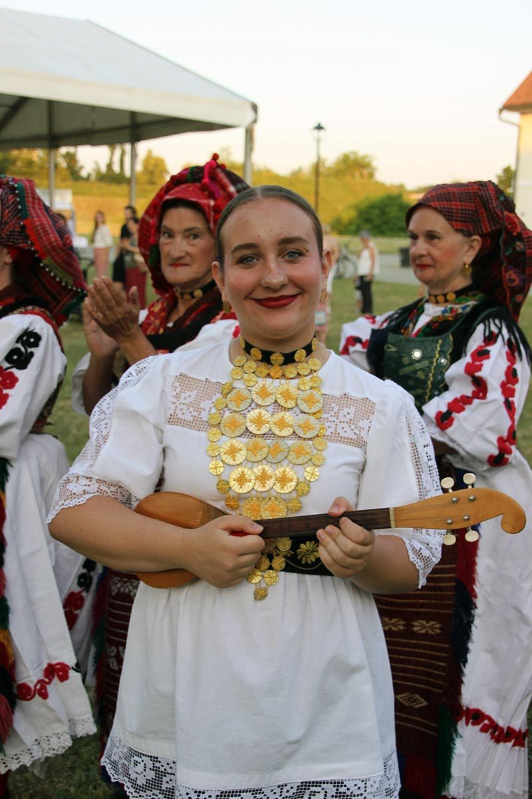

Ženska narodna nošnja
Ženska narodna nošnja sastoji se od četiri osnovna dijela: rubine, oplećka, pregače i marame. Ženska rubina je suknja koja se nosila odostraga od boka do boka, zapeglana u falde, a sprijeda je ravna i vezana u struku.
Najčešće su se tkale od pamuka, dok je svečanija verzija bila protkana svilenim nitima. Oplećak ima duge i široke rukave, a ispod nadlaktice veže se mašnom. Pregača dolazi na rubinu i najčešće je tkana i ukrašena narodnim motivima.
Izgled nošnje mijenjao se ovisno o prigodi. Za svečane događaje nosili su se bogatiji vezovi, življe boje, nakit, zlatovez i čipka, dok je svakodnevna odjeća bila jednostavnija.